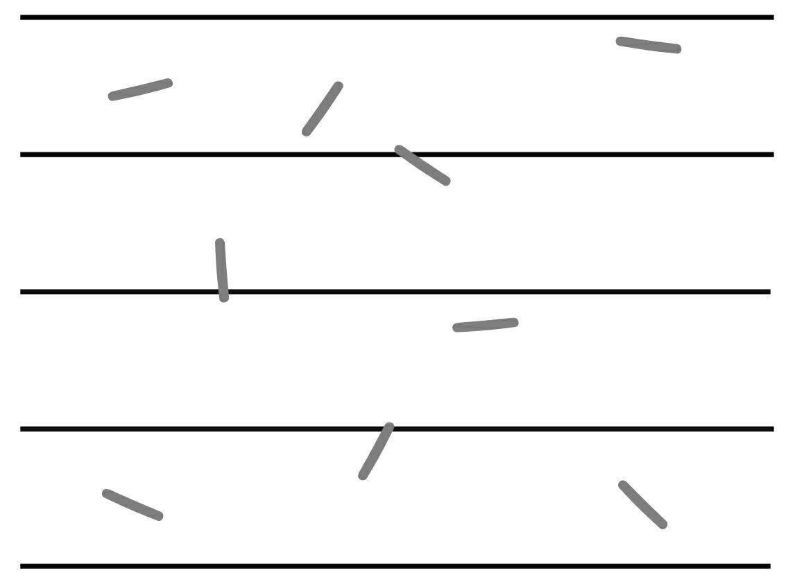

请你想象一下：你厨房的地板上铺满了长条状的瓷砖，这些瓷砖两两相接，接缝笔直。我们正在厨房里烤维也纳香肠，我不小心把长度为L的维也纳香肠撒了一地（我记得之前拖过地了，不然我会因为浪费食物而十分愧疚）。如果地板上没有接缝的话，你可以贴上间隔d=2L的胶带，也就是胶带之间的宽度为两根维也纳香肠的长度。

不小心撒在地上的香肠正好与地上的接缝交叉的概率是多少呢？香肠中点可能落在两条接缝之间的任意位置，香肠的方向也是完全随机地分布的，对于很多人来说这可能很难计算。但此时散落在地上的香肠正好与瓷砖接缝相交的概率是π的倒数［普遍的公式为2×L/（d×π），在上文d=2L的情况下，得到概率为1/π］。
如果一次撒落的香肠足够多，那么正好与地板接缝相交的香肠的数量与香肠总数的比率将与上述公式计算得出的结果大致相同。香肠越多，比率越接近概率。同样，人们也可以从这个概率出发，估算圆周率的倒数，从而得出圆周率的近似值。
那么这些香肠是如何得知自己要落在哪里，以便让人们计算这些香肠正好与瓷砖接缝相交的概率的时候，算出来的正好是圆周率呢？这是个我需要赶紧绕道的哲学问题。但有一点是肯定的，数量庞大的香肠显示出了它们的集体智慧，这个现象非常神奇——无生命的物体群会呈现出符合统计理论的趋势，得出一个无比重要的数π！
马里奥·拉扎里尼（Mario Lazzarini）在1901年利用了这个“集体智慧”，只是这次他没有选用香肠，而是选择了长度L=2.5cm的针，在间隔d=3cm的线中一共进行了3408次试验，其中有1808次针与线相交。由此，拉扎里尼得出π的近似值为3.1415929，小数点后的6位数字完全正确。